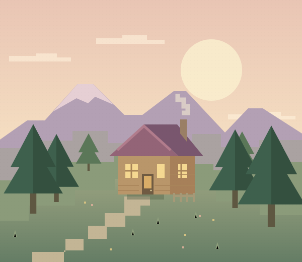

Wicklen
Днём — обживаемся.
Ночью — держимся вместе.
Постройте дом у гор, освойте заклинания или соберите свою первую мастерскую. Здесь есть куда отправиться вместе — и ради чего вернуться на базу.

Что вас ждёт
по ту сторону спавна
Сборка складывается из разных занятий. Вот как они работают, какие моды за них отвечают и с чего можно начать.
Хотите заглянуть в детали?
Весь состав, версии и описания — в отдельном каталоге.
Идите за любопытством.
Дух — рядом.
Наш мод Wicklen: Chronicles связывает прогулки, находки и вылазки в личный дневник. Рассмотрите существо в подзорную трубу, подпишите найденную станцию или выберите маршрут к знакомому месту.
Любите спокойное исследование? Собирайте наблюдения и обустраивайте полевой стол. Хочется боя — примите испытание, когда будете готовы.
Знакомство с ChroniclesG — открыть дневник в игре
 Наш мод изнутри · реальные игровые экраны ↗
Наш мод изнутри · реальные игровые экраны ↗
Всё для первого
входа — здесь.
Текущий комплект — Wicklen с Chronicles 0.4.2. Для первого входа скачайте полный архив. Если уже играете на 0.4.1, достаточно небольшого обновления.
Ваша точка старта
121 клиентский мод, настройки, русский ресурспак и инструкция.
Скачать полный комплект 449,8 МБДля отдельного профиля Fabric. Minecraft и Java устанавливаются через лаунчер. Пошаговая установка ↓
Обновление 0.4.1 → 0.4.2
Замените прежний JAR Chronicles и обновите русский ресурспак. Порядок действий — в UPDATE.md внутри архива.
1,02 МБ · только для комплекта 0.4.1Что делать после входа?
Как познакомиться с духом, сделать первое наблюдение и найти своё занятие.
Краткий игровой маршрутЧто изменилось
Размер дневника и реплик настраивается. Реплики можно скрыть, сделать прозрачнее и реже. Карта двигается мышью и масштабируется колёсиком.
Настроить под себя →Ваш первый квест
Создайте отдельный профиль для сборки, чтобы её моды и настройки хранились в одной папке.
Создайте профиль Minecraft 26.3
Выберите Fabric Loader 0.20.1 и Java 25 в настройках лаунчера. Java 21 для этой сборки не подходит.
Откройте папку этого профиля
Через лаунчер найдите папку игры: там находятся
mods/,config/иlogs/.Распакуйте основной архив
Скопируйте содержимое ZIP в папку профиля. Файлы модов должны оказаться в
mods/имя.jar. Инструкция по обновлению с 0.4.1 — в небольшом архиве UPDATE.md.Выделите память
На компьютере с 16 ГБ оперативной памяти начните с 6 ГБ для Java. Остальная память нужна системе и другим приложениям.
Заходите на сервер
Запустите профиль и добавьте адрес в сетевой игре:
Полная инструкция и дополнительные настройки
В полном комплекте уже есть русский ресурспак. При обновлении с 0.4.1 сначала удалите старый JAR Chronicles из папки mods, затем перенесите файлы маленького архива. Два JAR разных версий одновременно оставлять нельзя. Миры и личные настройки интерфейса сохраняются.
Уютно дома.
Интересно снаружи.
Ночи бывают разными. Подготовьте базу заранее, чтобы встречать необычные события с планом.
Укрепите укрытие
Зомби орды могут ломать стекло и деревянные двери. Стены и заборы полезнее, но учитывайте: зомби умеют карабкаться.
Следите за небом
Обычную ночь можно проспать. Ночь орды и кровавую луну — нельзя: пригодятся свет, еда и запас снаряжения.
Подготовьтесь к орде
В стартовом пресете орда приходит раз в 7 игровых дней, после начальной отсрочки. Это отдельное событие, а не каждая ночь.
Договоритесь о ролях
Кто-то прикрывает с луком, кто-то помогает заклинаниями, кто-то держит ближний бой. Совместная оборона даёт повод попробовать разные классы.
Перед тем
как спросить
Короткие ответы на вопросы об установке, обновлении и настройках.
Игра не запускается. С чего начать?
Проверьте Minecraft 26.3, Fabric Loader 0.20.1 и Java 25. В папке mods/ должны быть моды только из этого набора. Сначала проверьте основной архив без сторонних дополнений. Если проблема остаётся, подготовьте logs/latest.log и свежий отчёт из crash-reports/ для администратора. Перед отправкой уберите из лога пароль, если он туда попал.
Что делать, если мало FPS?
Уменьшите дальность прорисовки и дальность Distant Horizons. Проверьте игру без шейдеров. Начните с основного комплекта 0.4.2 и снизьте качество графики в настройках.
Как включить русский перевод?
Русский ресурспак уже входит в полный комплект и патч 0.4.2. После установки проверьте файл resourcepacks/ru-mods.zip в папке профиля. Сам ru-mods.zip не распаковывайте. В игре выберите русский язык и включите ru-mods в наборах ресурсов. Экраны настроек некоторых модов остаются на английском.
Как обновить сборку и сохранить настройки?
Закройте игру и сохраните старую папку mods/ отдельно. Положите новый набор в пустую mods/, затем примените конфиги и остальные файлы из нового архива. Старые и новые версии JAR смешивать не нужно. Личные сохранения и скриншоты сохраните; для важных настроек сделайте копию перед заменой.
Забыл пароль от сервера
Пароль можно сбросить через администратора сервера. Сообщите свой игровой ник владельцу сборки тем способом, которым получили приглашение. Старый пароль восстанавливать или пересылать не нужно.